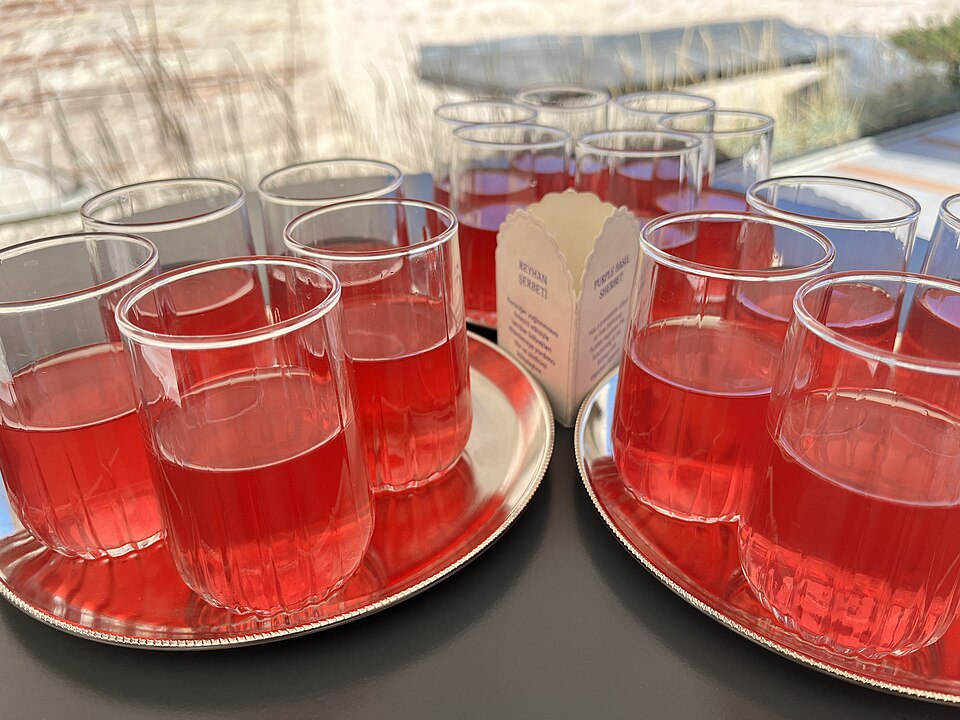
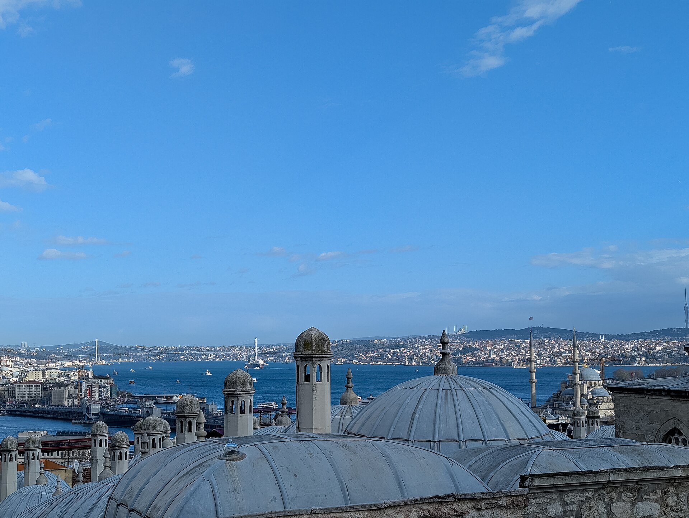
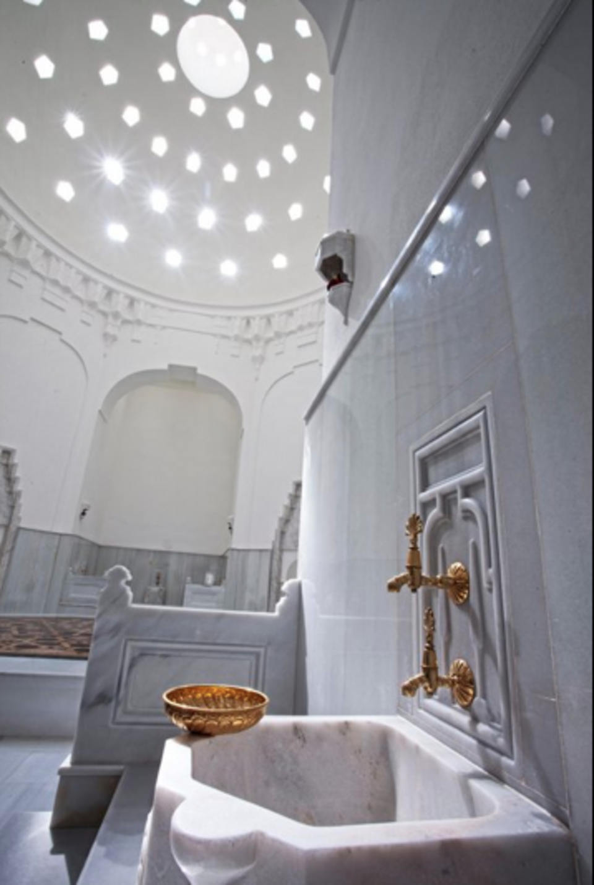
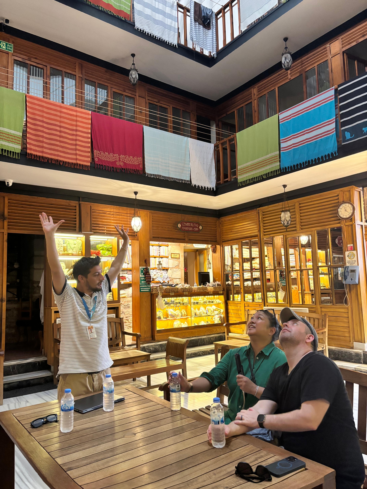

Cisterns, Aqueducts, Hammams & the Grand Bazaar — Roman to Ottoman
The Experience
Most visitors see Istanbul's domes and minarets. Few descend beneath the streets — into vaulted chambers, moss-covered columns, and still dark pools that kept three empires alive.
On this intimate walking tour, you'll follow the city's hydraulic heritage from Roman engineers to Eastern Roman emperors to Ottoman architects — each civilization inheriting, adapting, and beautifying what came before. Ending with the living artisan culture of the Grand Bazaar.
Ottoman şerbet tastings and Turkish coffee included along the way.

An Ottoman hammam interior — where water ritual became architecture


What You'll See
Not the famous one. A lesser-known Roman cistern, quiet and largely unseen — still carrying the weight of the empire that built it. This is where the tour begins: below the surface, before the crowds.
Walk beneath Constantinople's great water highway — a towering double-tiered aqueduct that carried water from Thrace over 120 km. One of the longest aqueduct systems of the ancient world, still standing in the middle of modern Istanbul.
Designed by Mimar Sinan — where water ritual became architecture. Understand how the hammam shaped daily life, faith, and social culture for five centuries. Optional full hammam ritual available.
Beyond the tourist lanes, the bazaar still breathes. Meet the craftspeople — coppersmiths, weavers, restorers — whose traditions stretch back to the same Ottoman centuries as the hammams and aqueducts above them.
What Travelers Say
"There are a million options to go to all the standard sites — but this tour is truly unique. Uğur is passionate and knowledgeable, and we felt very well taken care of throughout."
Tour Details

Your Guide
A licensed professional tour guide with a background in tourist guiding and travel management, with a research-led approach to the history, urban fabric, and cultural heritage of Istanbul and Anatolia. Uğur built this tour around a single obsession: how three civilizations used water to write the story of one city.
Ready to Go Beneath?
Small groups are limited to a maximum of 12 guests, kept intentionally close for real conversation along the way.
Reserve Your Spot on Viator →Secure payment · Free cancellation · Instant confirmation